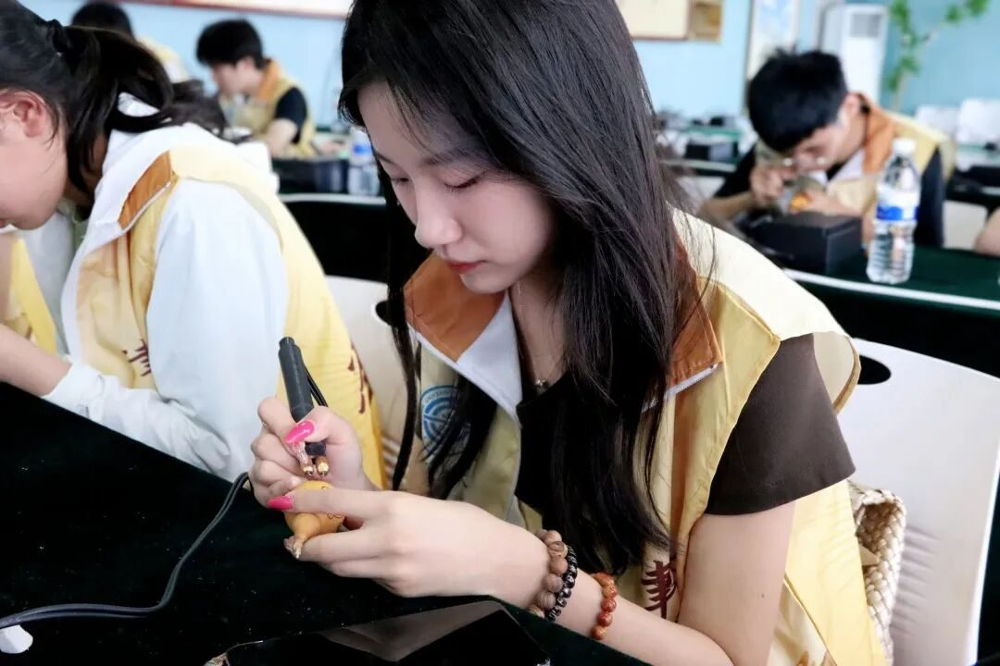
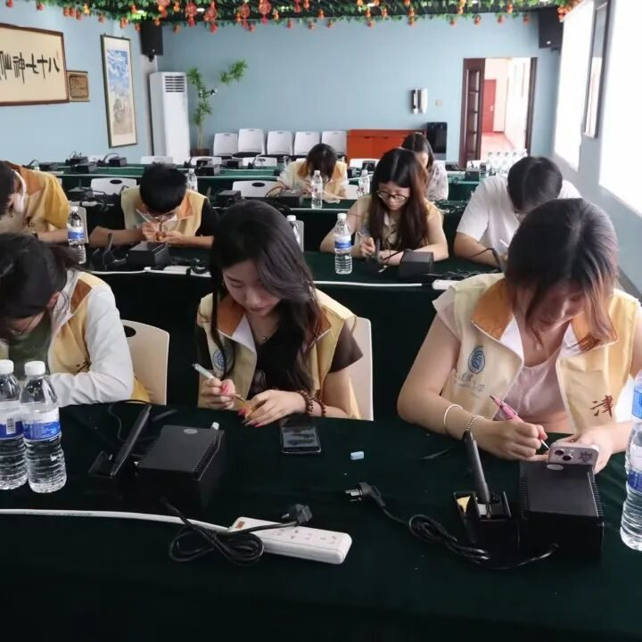
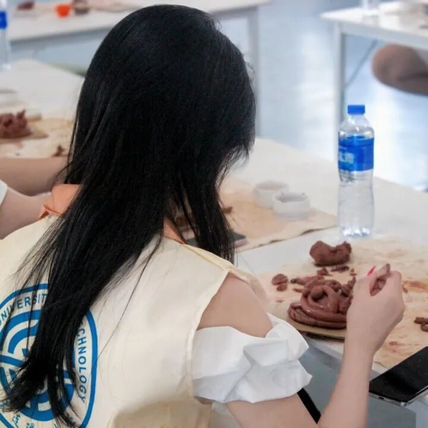

【行者无疆·津彩化韵】个人实践感悟——段发萍



行/者/无/疆

外联筑梦
外联是实践前置序章，连接团队与非遗传承群体。联系王氏泥塑王美老师等传承名家时，从忐忑到因他们的文化使命感消解紧张，我深知非遗人渴望传播技艺。协调行程遇场馆限制等难题，反复沟通、灵活调整成常态，这让我明白外联是尊重各方需求，以传承为锚搭建合作桥，每步都向非遗更近。



采访寻魂
采访直面非遗灵魂。古文化街问市民游客，白发老人忆杨柳青年画盼年的光芒、年轻游客对创新品的喜爱，让我懂非遗是集体记忆，也有当代活力。拜访传承人更震撼，面塑张亚杰老师演示技法、讲坚守历程，年画何老师解“勾刻印绘裱” ，传承人们守传统又拥创新，这些细节拼凑出非遗传承生态，让我知非遗传承是带温度的前行。

行者无疆
来源 | 行者无疆实践团
图片 | 行者无疆实践团
文字 | 段发萍
编辑 | 刘辰锡
审核 | 李凌志 杩健辉 张瑶琪
责编 | 邹靓靓 周 亮